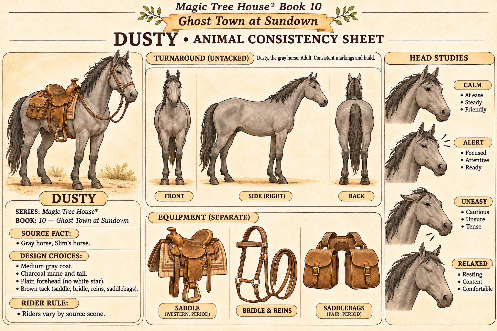
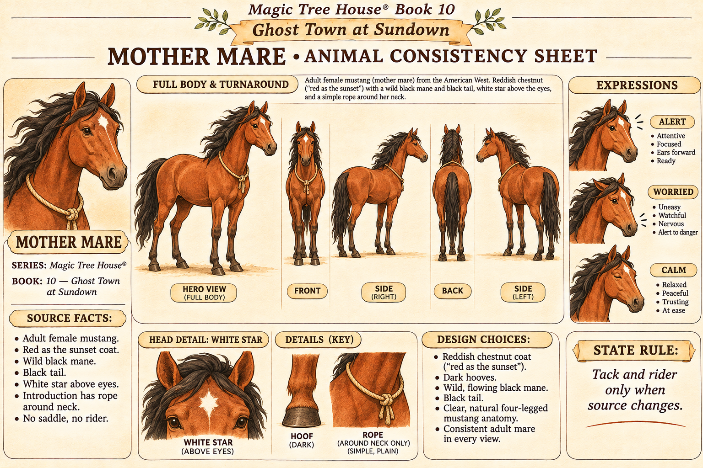
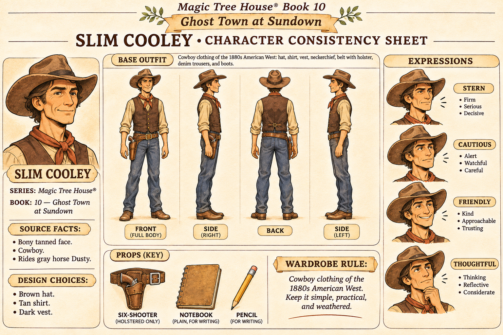

Annie
검수한 기본 복장 시트. 서부 복장은 원문에 나온 뒤에만 적용합니다.

4권의 공통 얼굴·체형을 우선합니다. 우비와 해변 의상은 10권에 적용하지 않습니다. 서부 복장과 소품은 원문에 따라 변경합니다.

검수한 기본 복장 시트. 서부 복장은 원문에 나온 뒤에만 적용합니다.
Source: gray horse belonging to Slim. Production choices: charcoal mane, plain forehead, brown western tack. Riders and tack state follow each source scene.

검수한 기본 복장 시트. 서부 복장은 원문에 나온 뒤에만 적용합니다.

나이 기준은 8½세입니다. 이미지의 괄호 속 8 years old 표기는 오류이며 적용하지 않습니다.
원문에서 실제로 등장하는 장면만 그립니다. 상세 시트 제작 대기.
원문에서 실제로 등장하는 장면만 그립니다. 상세 시트 제작 대기.
원문에서 실제로 등장하는 장면만 그립니다. 상세 시트 제작 대기.
Source: adult red mare, black mane, white forehead star; rope at introduction, no saddle or rider. Black tail and dark hooves are production choices, even where the generated sheet labels them source facts. Do not merge with Sunset.

원문에서 실제로 등장하는 장면만 그립니다. 상세 시트 제작 대기.
Reviewed: source confirms bony tanned face, cowboy and gray horse Dusty. Brown hat, tan shirt and dark vest are production design choices. Notebook is a design prop; show it only when source supports it.

원문에서 실제로 등장하는 장면만 그립니다. 상세 시트 제작 대기.